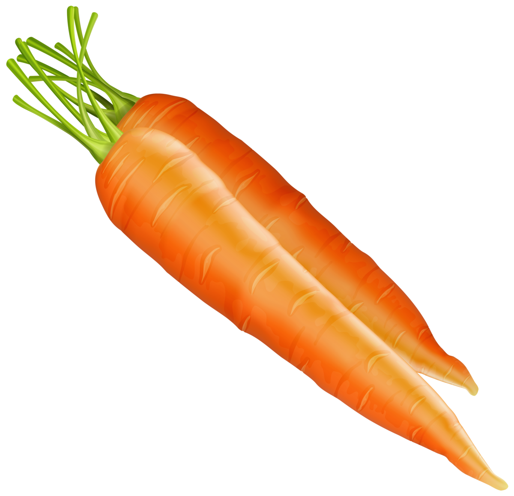

Nu este un secret că consumul de legume pentru pierderea în greutate este o opțiune ideală. Faptul este că ele conțin o mulțime de nutrienți. Pierderea în greutate pe legume este un depozit de oligoelemente utile și substanțe vitaminice.
Din acestea, puteți obține vitamine cum ar fi A, E, C, acid folic și potasiu. În plus, legumele sunt bogate în fibre, ceea ce are un efect foarte pozitiv asupra organismului în ansamblu și asupra procesului de scădere a greutății în special.
Cele mai utile legume pentru pierderea în greutate
Fără îndoială, legumele ajută la scăderea în greutate și, în același timp, nu suferă mușcături de foame. Cele mai utile și eficiente pentru scăderea în greutate sunt cele care conțin multe:
țesut celular;
fibre dietetice;
apă;
vitamine, oligoelemente, aminoacizi.
Fibrele sunt deosebit de importante pentru pierderea în greutate, deoarece este:
de mai multe ori accelerează metabolismul;
reduce nivelul de zahăr din sânge, care împiedică depunerea de grăsime în organism;
foarte bine elimină toxinele și toxinele;
curăță stomacul și intestinele de mucus;
hrănește perfect microflora intestinală utilă;
restabilește și stabilește digestia, procesele metabolice;
foarte bine satisface foamea din cauza umflarea fibrelor dietetice, care creează rapid și permanent efectul de sațietate.
Veganii puri nu mănâncă carne, refuză pește și lapte, exclud ouăle din dietă. Permiteți utilizarea mierei în cantități mici. Un astfel de sistem alimentar rigid este considerat în oficial medicină foarte dăunătoare sănătății. Refuzul categoric al consumului de proteine animale duce la dezvoltarea beriberi și la scăderea nivelului de hemoglobină. Respectarea strictă a tuturor regulilor duce la consecințe grave. Veganii nu poartă haine și nu folosesc substanțe chimice de uz casnic realizate cu adăugarea de materiale animale.
Vegetarienii preferă alimentele vegetale, este permisă utilizarea de pește, fructe de mare, ouă, produse lactate. Din dieta sunt excluse: carne de vită, carne de porc, miel. Puteți mânca miere într-o cantitate mică. Potrivit medicilor, vegetarianismul temporar poate fi benefic pentru organism.
Vegetarienii sunt împărțiți în mai multe subgrupe.
Citeste mai mult
Ecco un elenco delle verdure più utili ricche di fibre, che puoi tranquillamente includere nella dieta per perdere peso:
cavolo bianco, broccoli, Bruxelles, cavolo rapa, colorato;
porro;
cipolle;
carota;
radice di prezzemolo;
pomodori secchi;
pomodori freschi;
rabarbaro;
ravanello nero;
ravanello;
radice di sedano;
topinambur;
zucca;
rafano (radice);
pepe bulgaro;
asparagi;
piselli primaticci.
Corpul nostru este conceput astfel încât pur și simplu să nu poată obține o singură calorie din fibră! Fibrele nu sunt pe deplin digerate și nedigerate. Datorită acestui fapt, kilogramele în plus merg rapid și ușor.
Intrând în stomac, fibrele alimentare se umflă și umple volumul, provocând un sentiment prelungit de sațietate. Se pare că mâncați mult mai puțin și, în același timp, nu vă este foame. Și odată ce utilizați numărul minim de calorii, greutatea va scădea constant.
Cantitatea de fibre din dietă trebuie crescută treptat pentru a evita problemele digestive.
